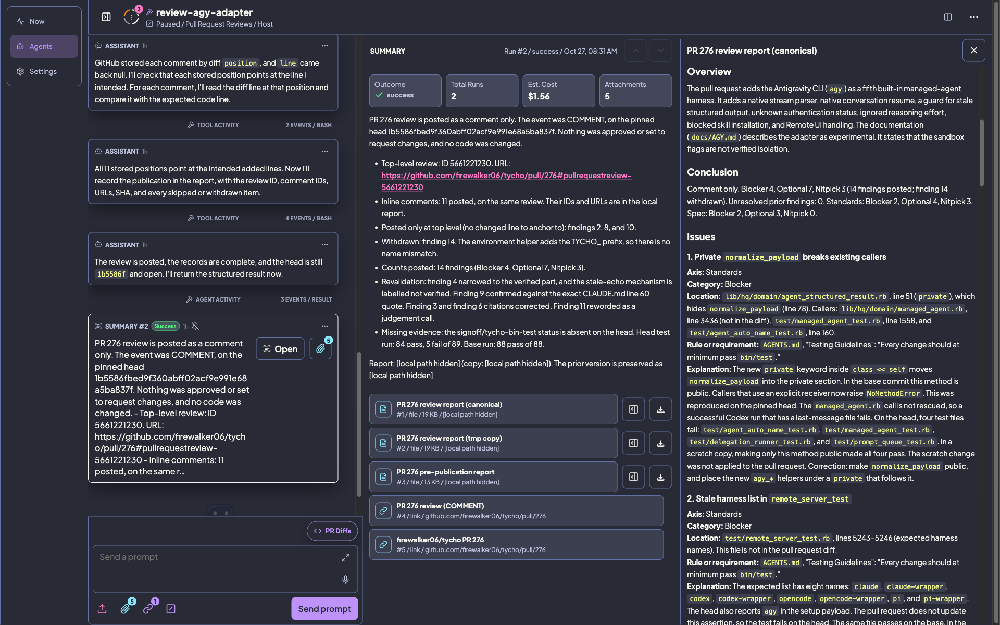
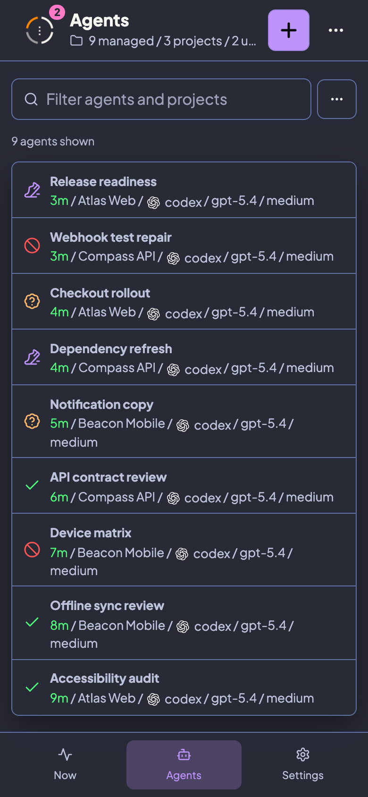

Tycho helps you see which agent sessions deserve your attention. Launch, monitor, switch, and continue agent work across your repos.
Your project config, logs, prompts, and history stay under your control. Built-in support for Codex, Claude, OpenCode, and Pi.

